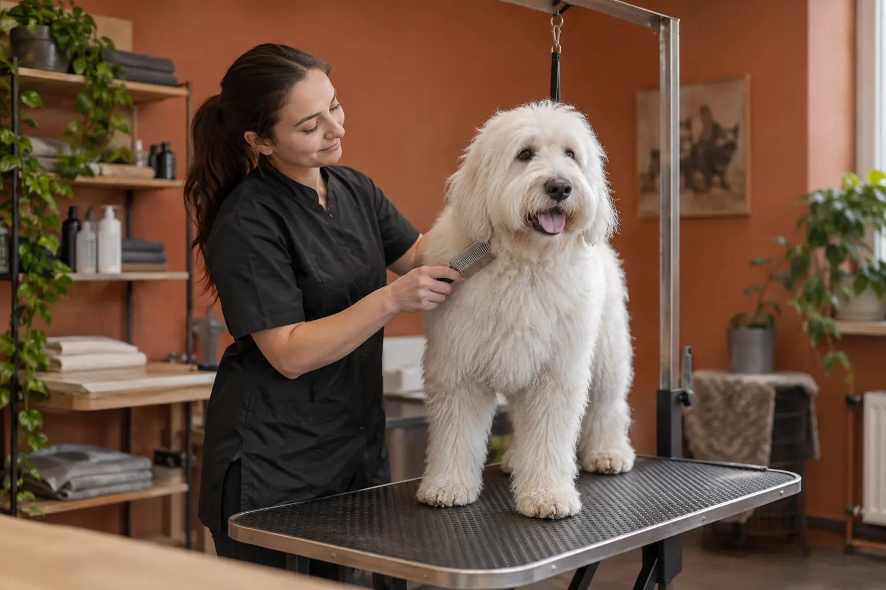

Gyvūno kirpimas ir kailio priežiūra: šuns, katės ir veterinaro poreikiai
Autorius: Madbeauty redakcija · Numatyta 2026 m. lapkričio 4 d. 10:00 (Lietuvos laiku)
Kaip atskirti kirpimą, maudymą ir kailio priežiūros konsultaciją, palyginti paslaugos apimtį ir atpažinti, kada pirmiau reikėtų veterinaro patarimo.

Šuns ar katės kailio priežiūros vizitą rinkitės pagal gyvūno rūšį, kailio būklę ir norimą darbą. „Kirpykla“ gali reikšti kirpimą, maudymą ar kitą priežiūros paslaugą, tačiau pats pavadinimas nepasako, kas įeina į konkretų pasiūlymą. Prieš rinkdamiesi išsiaiškinkite paslaugos apimtį ir kaip bus atsižvelgiama į gyvūno savijautą.
Pirmiausia įvardykite užduotį
Pradėkite nuo to, ką norite sutvarkyti, o ne nuo bendro paslaugos pavadinimo. Gyvūno rūšis, kailio būklė ir reakcija į priežiūrą lemia, kokią informaciją verta pateikti teikėjui. Šie klausimai padeda atskirti skirtingas vizito apimtis:
- Koks gyvūnas atvyks ir kokia jo kailio būklė?
- Ar ieškote kirpimo, maudymo, nagų trumpinimo, ar kailio priežiūros aptarimo?
- Kokie darbai įtraukti į pasiūlymą, o kurie kainuoja ar derinami atskirai?
- Kaip teikėjas elgiasi, jei gyvūnas nerimauja arba priežiūros metu pastebimas diskomfortas?
Kuo skiriasi kirpimas, maudymas ir konsultacija?
- Kirpimas: aptarkite norimą kailio ilgį ar formą ir tai, kurios zonos bus tvarkomos. Pavyzdys ar nuotrauka gali padėti apibūdinti pageidavimą, bet negarantuoja vienodo rezultato skirtingo kailio gyvūnams.
- Maudymas: pasitikrinkite, ar pasiūlyme numatytas tik maudymas, ar ir kailio išdžiovinimas bei iššukavimas. Nepriskirkite šių darbų paketui, kol teikėjas jų nepatvirtino.
- Nagų trumpinimas: išsiaiškinkite, ar tai atskira paslauga, ar jos dalis. Vien kirpimo ar maudymo pavadinimas nepatvirtina, kad nagai bus tvarkomi.
- Kailio priežiūros konsultacija: tai galimybė aptarti kailio būklę ir priežiūros užduotį. Ji savaime nereiškia, kad bus atliktas kirpimas, maudymas ar veterinarinis įvertinimas.
Šuns ir katės vizitui aptarkite skirtingą informaciją
Šuns vizitui ruošiantis verta iš anksto papasakoti apie jo elgesį, ankstesnę priežiūros patirtį ir svarbią sveikatos informaciją. RSPCA rekomenduoja rinktis kirpėją, kuris aptaria šiuos dalykus, priežiūros aplinką ir gyvūno streso požymius. Daugiau apie tai rašo „RSPCA rekomendacijos dėl šunų kirpėjo pasirinkimo“: pateiktos gairės taikomos Jungtinės Karalystės kontekstui, todėl jos nepatvirtina Lietuvos taisyklių ar konkretaus teikėjo kvalifikacijos.
Katės kailio priežiūrą taip pat vertinkite pagal konkrečios katės kailį ir savijautą, o ne pagal visiems vienodą grafiką. Jei yra sąvėlų, odos pokyčių ar gyvūnas patiria diskomfortą, situaciją aptarkite su veterinaru. RSPCA kačių priežiūros gairėse taip pat patariama nebandyti sąvėlų iškirpti žirklėmis: „RSPCA rekomendacijos dėl kačių kailio priežiūros“.
Kada priežiūros vizito neužtenka?
Kirpimas ar maudymas nėra veterinarinė apžiūra. Jei pastebite odos pokyčių, gyvūnas aiškiai priešinasi prisilietimui arba priežiūra, regis, kelia skausmą, nespręskite vien iš paslaugos meniu, kad problema bus sutvarkyta kirpykloje. Pirmiausia susisiekite su veterinaru ir aptarkite, ar įprasta kailio priežiūra šiuo metu tinkama.
Iliustracinis pasirinkimo pavyzdys
Tarkime, katės kailyje pastebite sąvėlą, o šukuojama ji traukiasi. Tai nėra pakankamas pagrindas tiesiog užsakyti įprastą kirpimą ar bandyti sąvėlą nukirpti namuose. Apibūdinkite situaciją teikėjui, paklauskite, ar jis gali įvertinti priežiūros užduotį, ir dėl diskomforto ar odos pokyčių pasitarkite su veterinaru. Tai pavyzdys, ne individuali rekomendacija konkrečiam gyvūnui.
Ką užsirašyti prieš pasirenkant vizitą?
- Gyvūno rūšį, kailio būklę ir svarbią priežiūros patirtį.
- Norimą darbą: kirpimą, maudymą, nagų trumpinimą ar konsultaciją.
- Konkrečius klausimus apie įtrauktus darbus ir papildomas paslaugas.
- Kaip teikėjas vertina gyvūno nerimą ir kada priežiūrą nutrauktų.
- Odos pokyčius ar diskomfortą, kuriuos jau aptarėte arba dar turite aptarti su veterinaru.
Paslaugos kategorijos pavadinimas pats savaime nepatvirtina, kad konkrečiame mieste yra teikėjas ar laisvas vizito laikas. Rinkitės miestą ir teikėją tik tada, kai matote tikrą, pasiekiamą įrašą. Jei tokio įrašo nėra, šis sąrašas padės aiškiai suformuluoti, kokios priežiūros ieškote.
Susiję gidai
Šaltiniai
- RSPCA · kačių kailio priežiūra · www.rspca.org.uk
- RSPCA · šunų kirpėjo pasirinkimas · www.rspca.org.uk